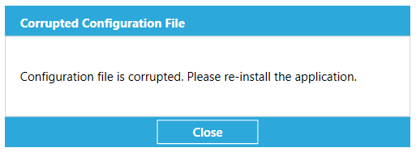

Overview
The Scan-To-Connect (STC) Utility enables up to 7 Zebra Bluetooth scanners to pair to a PC / tablet, each in one simple step, without having to modify your app.
Unlike standard HID keyboard, the STC Utility supports enhanced HID keyboard, which assures your data is received by your Windows PC. If corrupted, it will be retransmitted. If lost, you get an error beep to rescan item.
Supported Devices
For the compatible devices list, please visit following page.
https://www.zebra.com/us/en/support-downloads/software/utilities/cordless-scantoconnect.htmlSupported Operating System
Scan-To-Connect Utility for Windows support the following Windows operating systems.
- Windows 10 32bit
- Windows 10 64bit
Dependencies
.NET framework v4.7.2 or higher is required.
NOTE: Visit https://dotnet.microsoft.com/download/dotnet-framework to download the .NET framework.
Version History
Version 4.02.0007 - 04/2023
- Bug fix - The correct pairing barcode is now generated for “Zebra Printer Option” when the Enhanced HID communication option is selected.
Version 4.02.0006 - 03/2021
- Added enhanced HID support for corded USB scanners.
- Added hot swap support for improved staging of Bluetooth dongles (i.e. plug in dongle A, print pairing barcode, then unplug dongle A, and plugin in dongle B....).
- Added support to print pairing barcode to Zebra printers that support the ZPL programming language.
-
Added “Corrupted Configuration File” error, which identifies an incompatibility caused by a configuration file created from an older version of this STC utility. Solution - Create a new configuration file using this version of the STC utility.

Version 4.01.0002 - 04/2020
- Bug fix - Improved Unicode support for non-printable characters like the key mapping of a "Ctrl + ]" in German
Version 4.01.0000 - 03/2019
- Simulated HID Keyboard output, now handles German by setting “Keyboard emulation/locale” to “Default” in the SDK demo application. Other languages supported include English and French.
- Added Caps Lock Override support in Enhanced HID mode.
- Added Emulate Keypad support in Enhanced HID mode including with leading zeros.
- Added Keyboard Country/Code Type support in Enhanced HID mode.
Version 4.00.0015 - 08/2018
- Utility now handles ADF (pass through of ASCII characters), when ADF rule is programmed on scanner. Note STC utility still does not handle some ADF functionality like pause, caps lock over-ride, inter-key delays ...
- Improved pairing robustness when connecting multiple scanners to utility, no longer impacted by Windows OS limitation.
- Improved device connection stability.
- Added Bluetooth wedge emulation functionality.
Version 3.01.0000 - 06/2017
- Changed default app configuration, so that “Set factory default” option will be disabled by default.
Version 3.00.0003 - 04/2017
- Added extended pairing barcode support.
- Added settings page.
- Added option to print the paring barcode in different sizes.
- Added option to resize the on-screen barcode.
- Application can be configured as a production version without exposing settings.
Version 2.00.0000 - 02/2016
- Rebranded to Zebra Technologies.
Version 1.00.0000 - 12/2015
- Initial release.